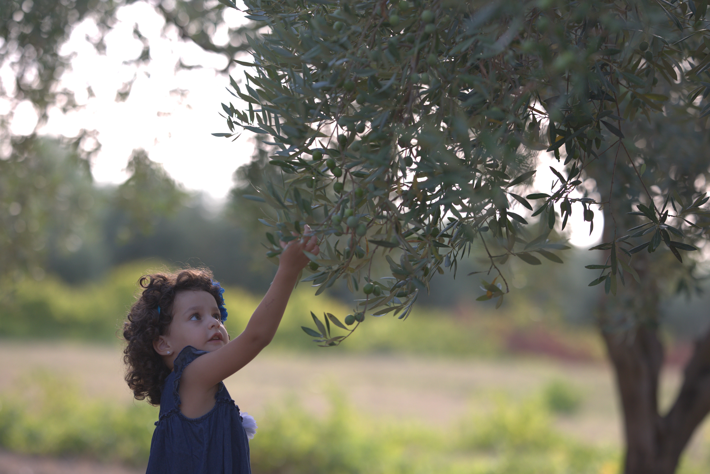

Una Storia da Raccontare
La nostra storia trova radici negli antichi ruderi della Valle del Belice. I nostri nonni e i nostri bisnonni, instancabili agricoltori, hanno da subito riconosciuto il valore delle terre dal tipico colore rossiccio, che venivano coltivate con mezzi rudimentali.
Non sempre ci siamo occupati di olivicoltura. Da buoni siciliani abbiamo lavorato in diversi campi dell'agricoltura: coltivavano frumento durante la prima guerra mondiale, dedicandosi poi agli agrumi, e negli anni '50–'60 hanno cominciato a usare quegli stessi campi per la viticoltura.

La vicinanza del mare e i venti salmastri si sono dimostrati particolarmente vocati per la coltivazione degli uliveti di Nocellara del Belice. Col passare del tempo e col cambio delle politiche, la decisione dei nonni di trasformare interi filari di viti in filari di ulivo fu immediata. Così il processo di espansione della Nocellara del Belice nel nostro territorio ha fatto quasi scomparire le altre colture, diventando reddito ed economia primaria del territorio.
Nei primi anni 2000 nasce Tenuta Ducale, piccola azienda agricola a conduzione familiare che prende il nome dall'antico Palazzo Ducale — fulcro delle attività agricole del nostro paese e luogo che diede i natali al fondatore dell'azienda. Oggi l'impegno di papà Nino è rivolto alla rivalorizzazione dell'olivicoltura del Belice, utilizzando nuove tecniche di piantumazione, coltivazione e produzione. I campi che furono dei nostri avi producono oggi il nettare verde che ci fregiamo di portare sulle vostre tavole.
I Nostri Valori
Biologico e IGP
Prodotti biologici certificati e a Indicazione Geografica Protetta: la garanzia di un olio d'eccellenza nel panorama agroalimentare europeo.
Amore per la Terra
Legame profondo con le terre rossicce della Valle del Belice, rispetto per l'ambiente, le fonti energetiche e i ritmi naturali del territorio.
Tradizione Familiare
Dai bisnonni instancabili agricoltori all'impegno quotidiano di papà Nino: generazioni che tramandano saperi, passione e amore per l'olivicoltura.
Qualità Superiore
Scrupolosi test organolettici e di laboratorio per ogni raccolto, garantendo un olio ben al di sopra dei parametri del regolamento CEE 2568/91.

La Nostra Filosofia
La nostra filosofia produttiva tiene per mano l'amore per la terra, il rispetto per l'ambiente, le fonti energetiche e la biodiversità; ed è proprio quest'ultima che viene garantita grazie all'utilizzo della cultivar autoctona Nocellara del Belice, nostro dovere proteggere e rispettare.
Come azienda, ma soprattutto come individui, crediamo fermamente in un'agricoltura biosostenibile che rispetti l'ambiente, ma anche le persone. È per questo motivo che ci impegniamo ogni giorno a migliorare le nostre tecniche colturali per produrre in maniera più responsabile, cercando di avvicinare la clientela alla conoscenza della nostra produzione, sensibilizzandola sul valore della qualità e della biodiversità.

I cambiamenti climatici e l'inaridimento del suolo ci hanno spinto verso metodi di coltivazione che puntano al risparmio delle risorse naturali e a un'agricoltura del tutto esente da fitofarmaci. Utilizziamo tecniche di lotta ecocompatibile e modelli di migliore pratica agricola, perché vogliamo dimostrare che è possibile produrre in modo sano, responsabile e sostenibile.
Siamo orgogliosi della qualità e dell'unicità del nostro prodotto, frutto di un accurato lavoro di selezione e monitoraggio. Ogni anno effettuiamo scrupolosi test organolettici e di laboratorio per controllare ogni raccolto, evidenziando anche le sottili differenze imputabili alle condizioni pedoclimatiche.
Siamo fieri di poter offrire ai nostri clienti un olio di qualità superiore. Grazie a questo processo di controllo e valutazione, garantiamo che il nostro olio soddisfi sempre le aspettative più elevate, ben al di sopra dei parametri forniti dal regolamento CEE 2568/91.